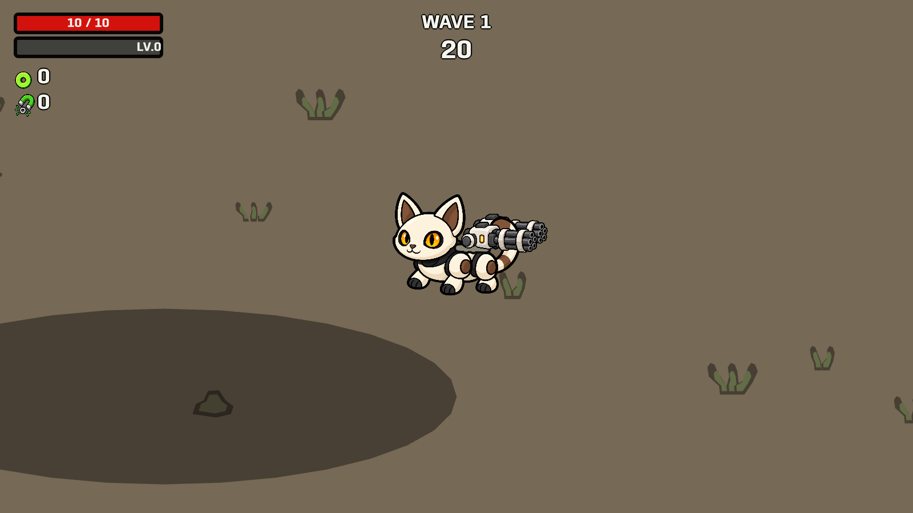
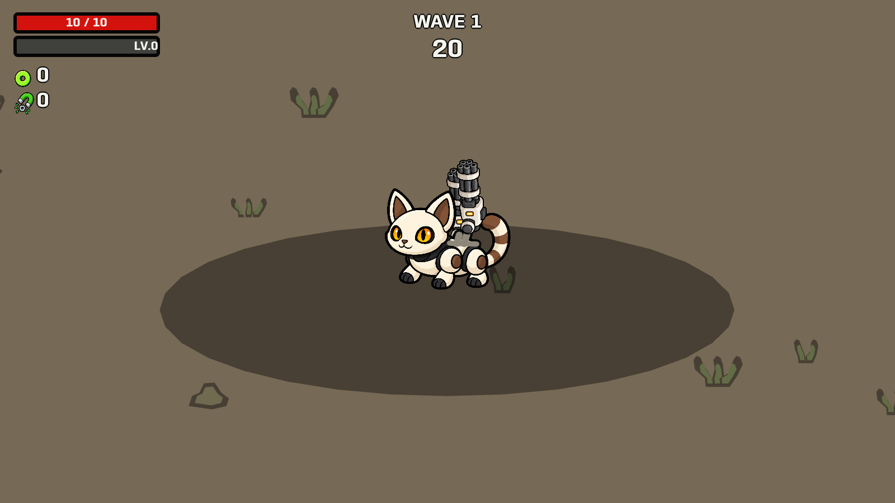
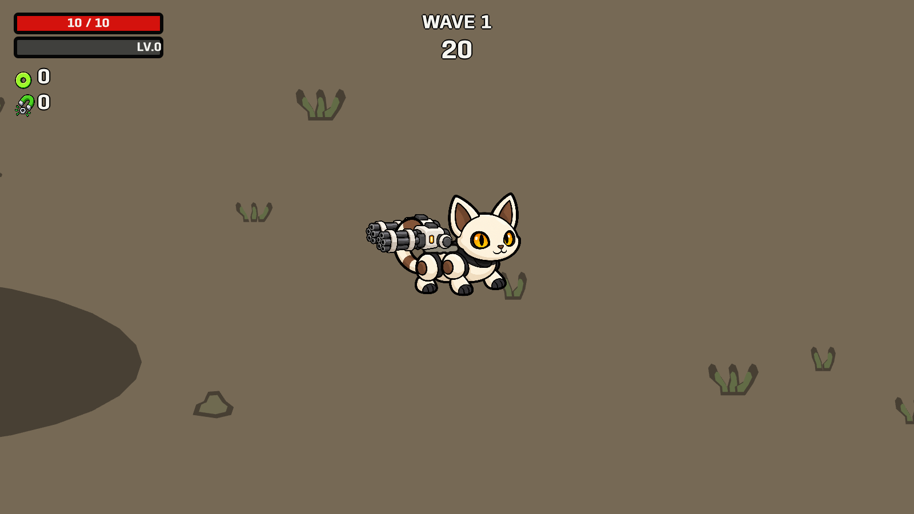
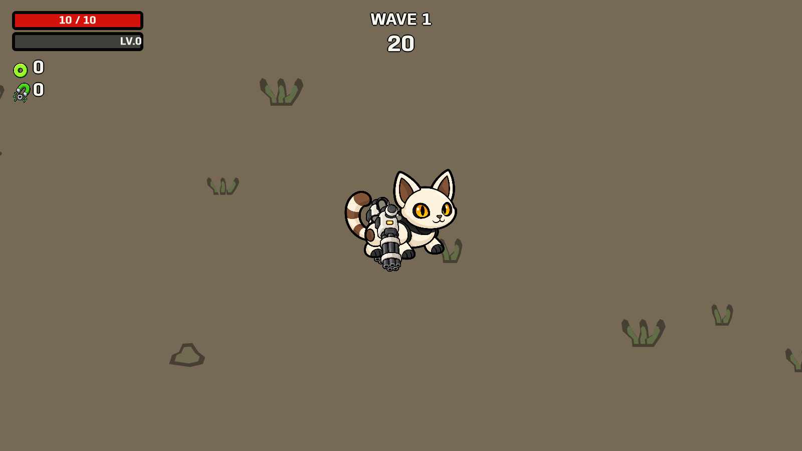
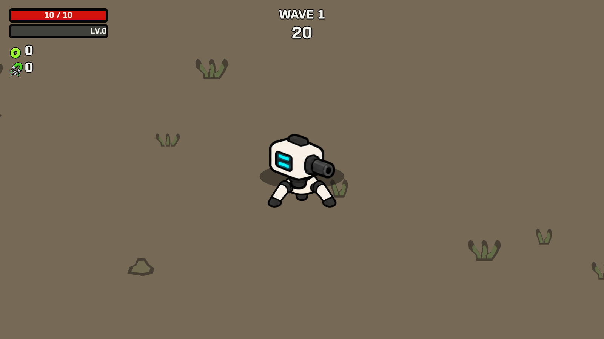
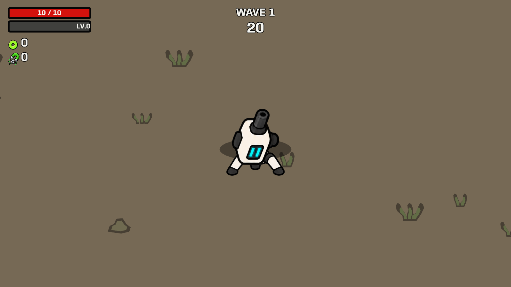
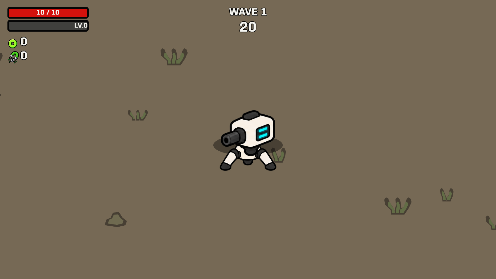
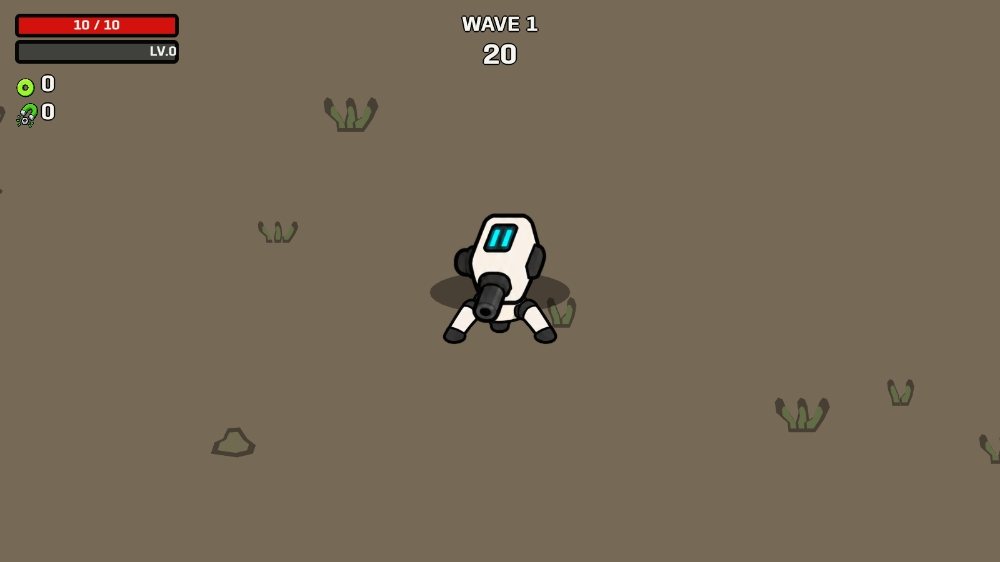

The Catling platform stays on the back. Upper guns pivot around their circular joints, including during recoil. Turret heads track targets while their tripods remain still.
Launch updated pet level · Pet behavior checks · Live aiming checks · Changes and artwork







